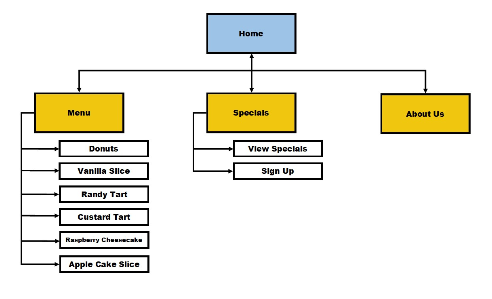

To improve business at Petite Treats Bakery by using the website to attract a higher volume of customers to visit their Kirwan bakery
Will be measured by an increase in customers both:
As outlined in the Introductory email, the business plans to attract young families and young people around the ages of 17 - 35. The website will target this audience by incorporating social media links to connect with millennial's as well as having high resolution images that millennial's have come to expect when visiting websites. Millennial's are also interested in eco-friendly and charitable initiates so website must show aspects of these, such as an Instagram feed of the company with nice looking layouts of food as well as bio-friendly cups and take-away utensils. Furthermore, a minimalist / earthy tone for colours will be used to try and further engage more target customers
